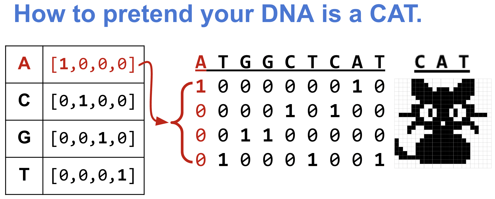
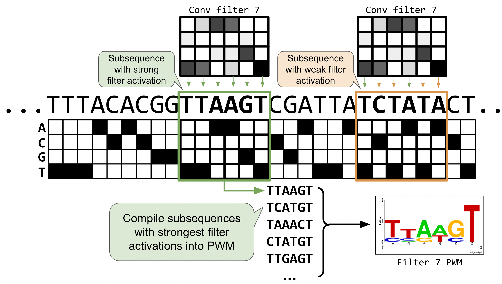

if False:
%pip install seaborn matplotlib logomaker
%pip install scikit-learn plotnine tqdm pandas numpy
%pip install torch torchvision torchmetrics03 · From Signals to DNA: Building a Sequence-to-Score CNN
gene46100
notebook
Originally created by Erin Wilson (source). Adapted by Haky Im and Ran Blekhman for GENE 46100.
Building on notebook-02
In notebook-02 you built a CNN that detects a spike pattern in a numeric signal. This notebook applies the same architecture to DNA sequences. The key differences:
| Notebook-02 | This notebook | |
|---|---|---|
| Input | 1-channel numeric signal | 4-channel one-hot DNA (A/C/G/T) |
| Task | Classification (spike yes/no) | Regression (predict a score) |
| Pattern | Fixed spike shape | Sequence motifs (TAT, GCG) |
| Batching | Full dataset in one pass | Mini-batches via DataLoader |
| Filters reveal | Spike-shaped weight vectors | Sequence logos |
Everything else — Conv1d, ReLU, pooling, the training loop, filter visualization — carries over directly.
Install and load packages
from collections import defaultdict
from itertools import product
import matplotlib.pyplot as plt
import numpy as np
import pandas as pd
import random
import torch
from torch import nn
import torch.nn.functional as F
from sklearn.model_selection import train_test_split
if torch.backends.mps.is_available():
torch.set_default_dtype(torch.float32)
print("Set default to float32 for MPS compatibility")def set_seed(seed: int = 42) -> None:
"""Set random seeds for reproducibility across all libraries."""
np.random.seed(seed)
random.seed(seed)
torch.manual_seed(seed)
if torch.backends.mps.is_available():
torch.mps.manual_seed(seed)
elif torch.cuda.is_available():
torch.cuda.manual_seed(seed)
torch.backends.cudnn.deterministic = True
torch.backends.cudnn.benchmark = False
print(f"Random seed set as {seed}")
set_seed(17)Choose the best available device — GPU training is faster but the dataset here is small enough for CPU.
DEVICE = torch.device('mps' if torch.backends.mps.is_available()
else 'cuda' if torch.cuda.is_available()
else 'cpu')
DEVICEPart 1: Generate Synthetic DNA Data
In real applications, we’d predict binding scores, expression levels, or chromatin accessibility from DNA. Here we design a simple scoring rule so we can verify that our PyTorch pipeline works before scaling to real biology.
Scoring rule for 8-mers:
- Each nucleotide contributes a base score: A = 20, C = 17, G = 14, T = 11
- The sequence score is the mean of its nucleotide scores
- Motif bonus: +10 if
TATappears anywhere, −10 ifGCGappears
This creates three groups of sequences (no motif, TAT, GCG) — easy for us to inspect, and it tests whether the model can learn local patterns (motifs) beyond single-nucleotide effects.

def kmers(k):
"""Generate all possible k-mers of length k."""
return [''.join(x) for x in product(['A','C','G','T'], repeat=k)]seqs8 = kmers(8)
print('Total 8-mers:', len(seqs8))score_dict = {'A': 20, 'C': 17, 'G': 14, 'T': 11}
def score_seqs_motif(seqs):
"""Score each sequence: mean nucleotide score ± motif bonuses."""
data = []
for seq in seqs:
score = np.mean([score_dict[base] for base in seq], dtype=np.float32)
if 'TAT' in seq:
score += 10
if 'GCG' in seq:
score -= 10
data.append([seq, score])
return pd.DataFrame(data, columns=['seq', 'score'])mer8 = score_seqs_motif(seqs8)
mer8.head()Spot-check a few sequences with motifs to confirm the scoring logic:
mer8[mer8['seq'].isin(['TGCGTTTT', 'CCCCCTAT'])]Visualize the score distribution
Discuss: The three-peaked histogram confirms our scoring rule: center peak (no motif), right peak (TAT bonus), left peak (GCG penalty).
plt.hist(mer8['score'].values, bins=20)
plt.title("8-mer score distribution")
plt.xlabel("Sequence score", fontsize=14)
plt.ylabel("Count", fontsize=14)
plt.show()Question 1
Modify the scoring function to create a more complex pattern. Instead of giving fixed bonuses for “TAT” and “GCG”, implement a position-dependent scoring where a motif gets a higher bonus if it appears at the beginning of the sequence compared to the end. How does this change the distribution of scores?
Part 2: Prepare Data for PyTorch
One-hot encoding: turning DNA into numbers
In notebook-02, our input was a 1-channel numeric signal. DNA is a string of letters, so we need to convert it. One-hot encoding maps each nucleotide to a length-4 vector:
- A → [1, 0, 0, 0], C → [0, 1, 0, 0], G → [0, 0, 1, 0], T → [0, 0, 0, 1]
An 8-mer becomes an (8 × 4) matrix — equivalent to a 4-channel signal of length 8. This is exactly the input shape Conv1d expects, with in_channels=4 instead of in_channels=1.

def one_hot_encode(seq):
"""One-hot encode a DNA sequence into a (seq_len, 4) numpy array."""
allowed = set("ACTGN")
if not set(seq).issubset(allowed):
invalid = set(seq) - allowed
raise ValueError(f"Invalid characters in sequence: {invalid}")
nuc_d = {'A': [1.0, 0.0, 0.0, 0.0],
'C': [0.0, 1.0, 0.0, 0.0],
'G': [0.0, 0.0, 1.0, 0.0],
'T': [0.0, 0.0, 0.0, 1.0],
'N': [0.0, 0.0, 0.0, 0.0]}
return np.array([nuc_d[x] for x in seq], dtype=np.float32)print("AAAAAAAA:\n", one_hot_encode("AAAAAAAA"))s = one_hot_encode("AGGTACCT")
print("AGGTACCT:\n", s)
print("Shape:", s.shape)Train / validation / test split
We use the same train_test_split from sklearn as in notebook-02. The split ratios (64% train, 16% val, 20% test) ensure each set contains examples from all three score groups.
train_df, test_df = train_test_split(mer8, test_size=0.2, random_state=42)
train_df, val_df = train_test_split(train_df, test_size=0.2, random_state=42)
print("Train:", train_df.shape)
print("Val: ", val_df.shape)
print("Test: ", test_df.shape)Verify that train, val, and test sets cover the full score distribution:
def plot_train_test_hist(train_df, val_df, test_df, bins=20):
plt.hist(train_df['score'].values, bins=bins, label='train', alpha=0.5)
plt.hist(val_df['score'].values, bins=bins, label='val', alpha=0.75)
plt.hist(test_df['score'].values, bins=bins, label='test', alpha=0.4)
plt.legend()
plt.xlabel("Sequence score", fontsize=14)
plt.ylabel("Count", fontsize=14)
plt.show()plot_train_test_hist(train_df, val_df, test_df)Dataset and DataLoader
In notebook-02 we passed the entire dataset as one tensor. With larger datasets that won’t fit in memory, so PyTorch provides Dataset (defines how to fetch one sample) and DataLoader (handles batching, shuffling, and parallel loading). This is the standard pattern you’ll see in every PyTorch project.
from torch.utils.data import Dataset, DataLoaderclass SeqDatasetOHE(Dataset):
"""Dataset that one-hot encodes DNA sequences on construction."""
def __init__(self, df, seq_col='seq', target_col='score'):
self.seqs = list(df[seq_col].values)
self.seq_len = len(self.seqs[0])
self.ohe_seqs = torch.stack([torch.tensor(one_hot_encode(x)) for x in self.seqs])
self.labels = torch.tensor(list(df[target_col].values)).unsqueeze(1)
def __len__(self):
return len(self.seqs)
def __getitem__(self, idx):
return self.ohe_seqs[idx], self.labels[idx]def build_dataloaders(train_df, test_df, seq_col='seq', target_col='score',
batch_size=128, shuffle=True):
"""Create DataLoaders from train and test DataFrames."""
train_ds = SeqDatasetOHE(train_df, seq_col=seq_col, target_col=target_col)
test_ds = SeqDatasetOHE(test_df, seq_col=seq_col, target_col=target_col)
train_dl = DataLoader(train_ds, batch_size=batch_size, shuffle=shuffle)
test_dl = DataLoader(test_ds, batch_size=batch_size)
return train_dl, test_dltrain_dl, val_dl = build_dataloaders(train_df, val_df)Part 3: Define the Models
We compare two architectures to see why convolution matters for motif detection:
- Linear model — learns a weight for each nucleotide at each position. It can capture single-nucleotide effects (e.g. “A contributes +20”) but cannot detect motifs, because it has no way to recognize that specific adjacent nucleotides matter.
- CNN model — uses sliding filters of width 3, exactly the length of our motifs (TAT, GCG). Each filter can learn a local pattern regardless of where it appears — the same translation invariance from notebook-02.
class DNA_Linear(nn.Module):
def __init__(self, seq_len):
super().__init__()
self.seq_len = seq_len
self.lin = nn.Linear(4 * seq_len, 1)
def forward(self, xb):
xb = xb.view(xb.shape[0], self.seq_len * 4)
return self.lin(xb)
class DNA_CNN(nn.Module):
def __init__(self, seq_len, num_filters=32, kernel_size=3):
super().__init__()
self.seq_len = seq_len
self.conv = nn.Conv1d(4, num_filters, kernel_size=kernel_size)
self.relu = nn.ReLU(inplace=True)
self.linear = nn.Linear(num_filters * (seq_len - kernel_size + 1), 1)
def forward(self, xb):
xb = xb.permute(0, 2, 1) # (batch, seq_len, 4) → (batch, 4, seq_len)
x = self.relu(self.conv(xb))
x = x.flatten(1)
return self.linear(x)Part 4: Training Loop
The training loop follows the same structure as notebook-02 — forward pass, compute loss, backpropagate, update weights — but now processes mini-batches from the DataLoader instead of the full dataset at once.
We use MSE loss (regression) instead of cross-entropy (classification), and SGD as the optimizer.
def train_model(model, train_dl, val_dl, device, lr=0.01, epochs=50):
"""Train a model and return loss histories."""
optimizer = torch.optim.SGD(model.parameters(), lr=lr)
loss_fn = nn.MSELoss()
train_losses, val_losses = [], []
for epoch in range(epochs):
# --- Training ---
model.train() # enable training mode (affects dropout, batchnorm)
batch_losses, batch_sizes = [], []
for xb, yb in train_dl:
xb, yb = xb.to(device), yb.to(device) # move batch to GPU/CPU
pred = model(xb.float()) # forward pass: input → prediction
loss = loss_fn(pred, yb.float()) # compute loss: how wrong are we?
optimizer.zero_grad() # clear gradients from previous batch
loss.backward() # backprop: compute gradient of loss w.r.t. weights
optimizer.step() # update weights using gradients
batch_losses.append(loss.item())
batch_sizes.append(len(xb))
train_loss = np.average(batch_losses, weights=batch_sizes)
train_losses.append(train_loss)
# --- Validation (no gradient updates) ---
model.eval() # disable training-only layers
with torch.no_grad(): # skip gradient tracking (saves memory)
vl, ns = [], []
for xb, yb in val_dl:
xb, yb = xb.to(device), yb.to(device)
loss = loss_fn(model(xb.float()), yb.float())
vl.append(loss.item())
ns.append(len(xb))
val_loss = np.average(vl, weights=ns)
val_losses.append(val_loss)
print(f"E{epoch} | train loss: {train_loss:.3f} | val loss: {val_loss:.3f}")
return train_losses, val_lossesPart 5: Train and Compare
Linear model
seq_len = len(train_df['seq'].values[0])
model_lin = DNA_Linear(seq_len).type(torch.float32).to(DEVICE)
lin_train_losses, lin_val_losses = train_model(model_lin, train_dl, val_dl, DEVICE)def quick_loss_plot(data_label_list, loss_type="MSE Loss"):
for i, (train_data, test_data, label) in enumerate(data_label_list):
plt.plot(train_data, linestyle='--', color=f"C{i}", label=f"{label} Train")
plt.plot(test_data, color=f"C{i}", label=f"{label} Val", linewidth=3.0)
plt.legend(bbox_to_anchor=(1, 1), loc='upper left')
plt.ylabel(loss_type)
plt.xlabel("Epoch")
plt.show()lin_data_label = (lin_train_losses, lin_val_losses, "Linear")
quick_loss_plot([lin_data_label])Discuss: Not much learning happening — the linear model plateaus quickly.
CNN model
model_cnn = DNA_CNN(seq_len).to(DEVICE)
cnn_train_losses, cnn_val_losses = train_model(model_cnn, train_dl, val_dl, DEVICE)cnn_data_label = (cnn_train_losses, cnn_val_losses, "CNN")
quick_loss_plot([lin_data_label, cnn_data_label])Discuss: The CNN loss drops much further — its sliding filters can capture the 3-mer motifs that the linear model cannot.
Spot-check predictions
Let’s compare what each model predicts for specific sequences to understand why the linear model fails:
oracle = dict(mer8[['seq', 'score']].values)
def quick_seq_pred(model, desc, seqs, oracle):
print(f"__{desc}__")
for dna in seqs:
s = torch.tensor(one_hot_encode(dna)).unsqueeze(0).to(DEVICE)
pred = model(s.float())
actual = oracle[dna]
diff = pred.item() - actual
print(f"{dna}: pred:{pred.item():.3f} actual:{actual:.3f} ({diff:.3f})")
def quick_8mer_pred(model, oracle):
groups = [
("poly-X seqs", ['AAAAAAAA', 'CCCCCCCC', 'GGGGGGGG', 'TTTTTTTT']),
("other seqs", ['AACCAACA', 'CCGGTGAG', 'GGGTAAGG', 'TTTCGTTT']),
("with TAT motif", ['TATAAAAA', 'CCTATCCC', 'GTATGGGG', 'TTTATTTT']),
("with GCG motif", ['AAGCGAAA', 'CGCGCCCC', 'GGGCGGGG', 'TTGCGTTT']),
("both TAT and GCG", ['ATATGCGA', 'TGCGTATT']),
]
for desc, seqs in groups:
quick_seq_pred(model, desc, seqs, oracle)
print()quick_8mer_pred(model_lin, oracle)Discuss: The linear model underpredicts G-rich sequences and overpredicts T-rich ones. Why? It learned that G’s tend to appear in low-scoring sequences (because of GCG) and T’s in high-scoring ones (because of TAT). But it’s the 3-mer context that matters, not individual nucleotides —
GCGis penalized whileGAGis not. The linear model cannot make this distinction.
quick_8mer_pred(model_cnn, oracle)Discuss: The CNN handles both motif and non-motif sequences well, because its width-3 filters can detect the specific 3-mer patterns.
Question 2
Compare the performance of the Linear and CNN models by using different learning rates. First run both models with higher learning rates (0.05, 0.1) and lower learning rates (0.005, 0.001), then create loss plots showing:
- Linear model with these learning rates
- CNN model with these learning rates
Then analyze your results by answering:
- How does changing the learning rate affect convergence for each model?
- Which model is more sensitive to learning rate changes, and why?
- Based on your analysis, what learning rate would you recommend for each model type, and why?
Part 6: Evaluate on Test Set
The test set was never seen during training — it’s our honest estimate of how the model would perform on new sequences.
import altair as alt
from sklearn.metrics import r2_scoredef scatter_plot(model_name, df, r2):
"""Scatter actual vs predicted scores with a y=x reference line."""
plt.scatter(df['truth'].values, df['pred'].values, alpha=0.2)
xpoints = ypoints = plt.xlim()
plt.plot(xpoints, ypoints, linestyle='--', color='k', lw=2, scalex=False, scaley=False)
plt.ylim(xpoints)
plt.ylabel("Predicted Score", fontsize=14)
plt.xlabel("Actual Score", fontsize=14)
plt.title(f"{model_name} (R² = {r2:.3f})", fontsize=20)
plt.show()
def alt_scatter_plot(model_name, df, r2):
"""Interactive scatter plot with altair — hover to see sequences."""
import os
os.makedirs('alt_out', exist_ok=True)
plot_df = pd.DataFrame({
'truth': df['truth'].astype(float),
'pred': df['pred'].astype(float),
'seq': df['seq'].astype(str)
})
chart = alt.Chart(plot_df).mark_point().encode(
x=alt.X('truth', type='quantitative', title='Actual Score'),
y=alt.Y('pred', type='quantitative', title='Predicted Score'),
tooltip=['seq']
).properties(title=f'{model_name} (R² = {r2:.3f})')
chart.save(f'alt_out/scatter_plot_{model_name}.html')
display(chart)
def scatter_pred(models, seqs, oracle, interactive=False):
"""Generate scatter plots for a list of (name, model) pairs."""
for model_name, model in models:
print(f"Running {model_name}")
data = []
for dna in seqs:
s = torch.tensor(one_hot_encode(dna)).unsqueeze(0).to(DEVICE)
actual = oracle[dna]
pred = model(s.float())
data.append([dna, actual, pred.item()])
df = pd.DataFrame(data, columns=['seq', 'truth', 'pred'])
r2 = r2_score(df['truth'], df['pred'])
if interactive:
alt_scatter_plot(model_name, df, r2)
else:
scatter_plot(model_name, df, r2)seqs = test_df['seq'].values
models = [("Linear", model_lin), ("CNN", model_cnn)]
scatter_pred(models, seqs, oracle)Discuss: In a perfect model, all points fall on the y=x line. The linear model shows three distinct bands (it can’t resolve within-band variation caused by motifs), while the CNN clusters tightly around the diagonal.
alt.data_transformers.disable_max_rows()
scatter_pred(models, seqs, oracle, interactive=True)Discuss: Hover over outlier points in the interactive plot. The CNN’s largest errors tend to be sequences with multiple instances of a motif — our scoring function only gives one bonus regardless of count, but the model reasonably guesses that more motifs should mean a stronger effect.
Question 3
Design an approach to improve the model’s prediction accuracy, particularly focusing on the sequences where the current model performs poorly:
- After identifying sequences where the CNN model has high prediction errors, propose and implement a modification to either the model architecture, the loss function, the training process, or the data representation
- Retrain the model with your modifications
- Create comparative visualizations (such as scatter plots, error histograms, or other appropriate plots) to demonstrate the impact of your changes
- Analyze your results by discussing how your modification addresses the specific weaknesses you identified. What are the trade-offs involved in your approach?
Part 7: Visualize Convolutional Filters
In notebook-02 we plotted filter weights as bar charts. With DNA, we can go further: for each filter, we collect the subsequences that activate it most strongly, then display them as a sequence logo — the same representation used for transcription factor binding motifs.
Positions with tall letters have high information content (the filter is selective), while flat positions mean the filter doesn’t care which nucleotide appears there.
import logomakerdef get_conv_layers_from_model(model):
"""Extract convolutional layers and their weights from a model."""
model_weights, conv_layers, bias_weights = [], [], []
for child in model.children():
if isinstance(child, nn.Conv1d):
model_weights.append(child.weight)
conv_layers.append(child)
bias_weights.append(child.bias)
elif isinstance(child, nn.Sequential):
for subchild in child:
if isinstance(subchild, nn.Conv1d):
model_weights.append(subchild.weight)
conv_layers.append(subchild)
bias_weights.append(subchild.bias)
print(f"Total convolutional layers: {len(conv_layers)}")
return conv_layers, model_weights, bias_weights
def view_filters(model_weights, num_cols=8):
"""Display raw filter weight heatmaps."""
weights = model_weights[0]
num_filt = weights.shape[0]
filt_width = weights[0].shape[1]
num_rows = int(np.ceil(num_filt / num_cols))
plt.figure(figsize=(20, 17))
for i, filt in enumerate(weights):
ax = plt.subplot(num_rows, num_cols, i + 1)
ax.imshow(filt.cpu().detach(), cmap='gray')
ax.set_yticks(np.arange(4))
ax.set_yticklabels(['A', 'C', 'G', 'T'])
ax.set_xticks(np.arange(filt_width))
ax.set_title(f"Filter {i}")
plt.tight_layout()
plt.show()conv_layers, model_weights, bias_weights = get_conv_layers_from_model(model_cnn)
view_filters(model_weights)
The raw heatmaps show what each filter “looks for,” but they’re hard to read. Let’s convert them to sequence logos by running test sequences through the filters and collecting which subsequences cause high activation:
def get_conv_output_for_seq(seq, conv_layer):
"""Run a sequence through a conv layer and return filter activations."""
seq_t = torch.tensor(one_hot_encode(seq)).unsqueeze(0).permute(0, 2, 1).to(DEVICE)
with torch.no_grad():
return conv_layer(seq_t.float())[0]
def get_filter_activations(seqs, conv_layer, act_thresh=0):
"""Collect subsequences that activate each filter above a threshold,
accumulating them into a count matrix (PWM) per filter."""
num_filters = conv_layer.out_channels
filt_width = conv_layer.kernel_size[0]
filter_pwms = {i: torch.zeros(4, filt_width) for i in range(num_filters)}
print(f"Num filters: {num_filters}, filter width: {filt_width}")
for seq in seqs:
res = get_conv_output_for_seq(seq, conv_layer)
for filt_id, act_vec in enumerate(res):
for pos in torch.where(act_vec > act_thresh)[0]:
pos = pos.item()
subseq = seq[pos:pos + filt_width]
subseq_tensor = torch.tensor(one_hot_encode(subseq)).T
filter_pwms[filt_id] += subseq_tensor
return filter_pwms
def view_filters_and_logos(model_weights, filter_activations, num_cols=8):
"""Display filter heatmaps paired with their sequence logos."""
weights = model_weights[0].squeeze(1)
num_filts = len(filter_activations)
num_rows = int(np.ceil(num_filts / num_cols)) * 2 + 1
plt.figure(figsize=(20, 17))
j = 0
for i, filt in enumerate(weights):
if i % num_cols == 0:
j += num_cols
ax1 = plt.subplot(num_rows, num_cols, i + j + 1)
ax1.imshow(filt.cpu().detach(), cmap='gray')
ax1.set_yticks(np.arange(4))
ax1.set_yticklabels(['A', 'C', 'G', 'T'])
ax1.set_xticks(np.arange(weights.shape[2]))
ax1.set_title(f"Filter {i}")
ax2 = plt.subplot(num_rows, num_cols, i + j + 1 + num_cols)
filt_df = pd.DataFrame(filter_activations[i].T.numpy(), columns=['A', 'C', 'G', 'T'])
filt_df_info = logomaker.transform_matrix(filt_df, from_type='counts', to_type='information')
logo = logomaker.Logo(filt_df_info, ax=ax2)
ax2.set_ylim(0, 2)
ax2.set_title(f"Filter {i}")
plt.tight_layout()some_seqs = random.choices(seqs, k=3000)
filter_activations = get_filter_activations(some_seqs, conv_layers[0])
view_filters_and_logos(model_weights, filter_activations)With a stronger activation threshold
Setting act_thresh=1 keeps only the strongest activations, making the logos crisper. Some filters may have no matches above this threshold.
filter_activations = get_filter_activations(some_seqs, conv_layers[0], act_thresh=1)
view_filters_and_logos(model_weights, filter_activations)Discuss: You should see some filters that clearly learned TAT and GCG, while others capture subtler nucleotide preferences. In deeper models with multiple conv layers, first-layer filters can combine in complex ways, so they may not always correspond to recognizable motifs (Koo and Eddy, 2019).
Summary
This notebook showed the full pipeline from DNA sequences to trained CNN:
| Step | What we did | Why |
|---|---|---|
| Scoring rule | Designed a synthetic task with motif bonuses | Verifiable ground truth before tackling real biology |
| One-hot encoding | A/C/G/T → 4-channel input | Conv1d needs numeric input; 4 channels = 4 nucleotides |
| DataLoader | Batched training with Dataset + DataLoader |
Scales to datasets too large for memory |
| Linear vs CNN | Compared a position-only model to a motif-capable model | Shows that local context (convolution) is essential for motif detection |
| Scatter plots | Predicted vs actual scores on held-out test set | Honest evaluation; reveals systematic errors |
| Filter → logo | Visualized what each filter learned as a sequence logo | Interpretability — do learned filters match known motifs? |
Further reading
Foundational papers on CNNs applied to DNA:
- DeepBind: Alipanahi et al 2015
- DeepSEA: Zhou and Troyanskaya 2015
- Basset: Kelley et al 2016